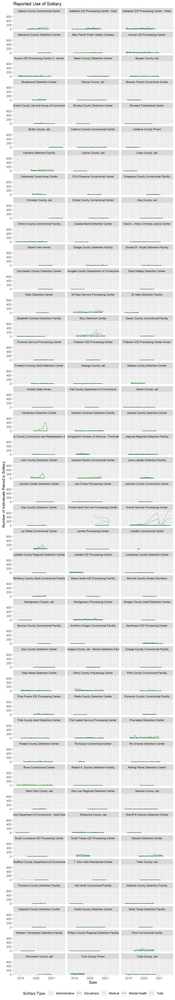
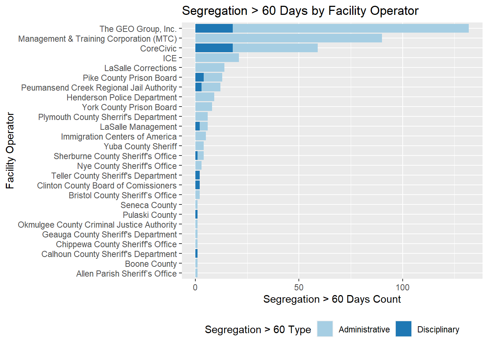

# Load necessary libraries
# Reading and wrangling
library(googlesheets4)
library(readr)
library(tidyverse)## -- Attaching packages --------------------------------------- tidyverse 1.3.1 --## v ggplot2 3.3.4 v dplyr 1.0.6
## v tibble 3.1.1 v stringr 1.4.0
## v tidyr 1.1.3 v forcats 0.5.1
## v purrr 0.3.4## -- Conflicts ------------------------------------------ tidyverse_conflicts() --
## x dplyr::filter() masks stats::filter()
## x dplyr::lag() masks stats::lag()library(janitor)##
## Attaching package: 'janitor'## The following objects are masked from 'package:stats':
##
## chisq.test, fisher.testlibrary(lubridate)##
## Attaching package: 'lubridate'## The following objects are masked from 'package:base':
##
## date, intersect, setdiff, unionlibrary(DT)
# Plotting
library(ggplot2)
library(RColorBrewer)
# Tables
library(kableExtra)##
## Attaching package: 'kableExtra'## The following object is masked from 'package:dplyr':
##
## group_rows# Load custom function
source("function_clean_facility_names.R", local = knitr::knit_global())# Read in Sheet G-324A-19
df_324 <- read_sheet("https://docs.google.com/spreadsheets/d/1im5VSi3bIEi13O8WQ56wEIXSyNEstbGMylXXgD9bAG0/edit#gid=1858227071",
sheet="G-324A-19",
col_names = TRUE,
col_types = "c") %>%
clean_names() %>%
# Run custom cleaning function
clean_facility_names() %>%
# df specific changes
mutate(facility = as.factor(facility),
state = as.factor(state),
date = mdy(inspection_date),
current_inspection_date_from = mdy(current_inspection_date_from),
current_inspection_date_to = mdy(current_inspection_date_to)
) %>%
relocate(date, .before = inspection_date) %>%
mutate_at(c(20:49), as.numeric)## > Using an auto-discovered, cached token## To suppress this message, modify your code or options to clearly consent to
## the use of a cached token## See gargle's "Non-interactive auth" vignette for more details:## <https://gargle.r-lib.org/articles/non-interactive-auth.html>## > The googlesheets4 package is using a cached token for 'n8craig@gmail.com'## Reading from "000inspection_forms"## Range "'G-324A-19'"## Warning: Expected 2 pieces. Missing pieces filled with `NA` in 1 rows [182].## Warning: 1 failed to parse.## Warning in mask$eval_all_mutate(quo): NAs introduced by coercion
## Warning in mask$eval_all_mutate(quo): NAs introduced by coercion
## Warning in mask$eval_all_mutate(quo): NAs introduced by coercion
## Warning in mask$eval_all_mutate(quo): NAs introduced by coercion
## Warning in mask$eval_all_mutate(quo): NAs introduced by coercion
## Warning in mask$eval_all_mutate(quo): NAs introduced by coercion
## Warning in mask$eval_all_mutate(quo): NAs introduced by coercion
## Warning in mask$eval_all_mutate(quo): NAs introduced by coercion
## Warning in mask$eval_all_mutate(quo): NAs introduced by coercion
## Warning in mask$eval_all_mutate(quo): NAs introduced by coercion
## Warning in mask$eval_all_mutate(quo): NAs introduced by coercion
## Warning in mask$eval_all_mutate(quo): NAs introduced by coercion
## Warning in mask$eval_all_mutate(quo): NAs introduced by coercion
## Warning in mask$eval_all_mutate(quo): NAs introduced by coercion
## Warning in mask$eval_all_mutate(quo): NAs introduced by coercion
## Warning in mask$eval_all_mutate(quo): NAs introduced by coercion
## Warning in mask$eval_all_mutate(quo): NAs introduced by coercion
## Warning in mask$eval_all_mutate(quo): NAs introduced by coercion
## Warning in mask$eval_all_mutate(quo): NAs introduced by coercion
## Warning in mask$eval_all_mutate(quo): NAs introduced by coercion
## Warning in mask$eval_all_mutate(quo): NAs introduced by coercion
## Warning in mask$eval_all_mutate(quo): NAs introduced by coercion
## Warning in mask$eval_all_mutate(quo): NAs introduced by coercion
## Warning in mask$eval_all_mutate(quo): NAs introduced by coercion
## Warning in mask$eval_all_mutate(quo): NAs introduced by coercion
## Warning in mask$eval_all_mutate(quo): NAs introduced by coercion
## Warning in mask$eval_all_mutate(quo): NAs introduced by coercion
## Warning in mask$eval_all_mutate(quo): NAs introduced by coercion
## Warning in mask$eval_all_mutate(quo): NAs introduced by coercion
## Warning in mask$eval_all_mutate(quo): NAs introduced by coercion# Read Google Sheet incident worksheet, convert to data frame, and wrangle
df_324_inc <- read_sheet("https://docs.google.com/spreadsheets/d/1im5VSi3bIEi13O8WQ56wEIXSyNEstbGMylXXgD9bAG0/edit#gid=1858227071",
sheet="G-324A-19-inc",
col_types = "c") %>%
clean_names() %>%
# Run custom cleaning function
clean_facility_names() %>%
# df_specific changes
unite(date, year:month) %>%
mutate(facility = as.factor(facility),
state = as.factor(state),
date = ym(date)
) %>%
mutate_at(c(6:76), as.numeric)## Reading from "000inspection_forms"## Range "'G-324A-19-inc'"## New names:
## * `Sexual abuse allegations detainee on staff/contractor/volunteer` -> `Sexual abuse allegations detainee on staff/contractor/volunteer...29`
## * `Sexual abuse allegations detainee on staff/contractor/volunteer` -> `Sexual abuse allegations detainee on staff/contractor/volunteer...34`## Warning: Expected 2 pieces. Missing pieces filled with `NA` in 12 rows [2144,
## 2145, 2146, 2147, 2148, 2149, 2150, 2151, 2152, 2153, 2154, 2155].## Warning: 1 failed to parse.## Warning in mask$eval_all_mutate(quo): NAs introduced by coercion
## Warning in mask$eval_all_mutate(quo): NAs introduced by coercion
## Warning in mask$eval_all_mutate(quo): NAs introduced by coercion
## Warning in mask$eval_all_mutate(quo): NAs introduced by coercion
## Warning in mask$eval_all_mutate(quo): NAs introduced by coercion
## Warning in mask$eval_all_mutate(quo): NAs introduced by coercion
## Warning in mask$eval_all_mutate(quo): NAs introduced by coercion
## Warning in mask$eval_all_mutate(quo): NAs introduced by coercion
## Warning in mask$eval_all_mutate(quo): NAs introduced by coercion
## Warning in mask$eval_all_mutate(quo): NAs introduced by coercion
## Warning in mask$eval_all_mutate(quo): NAs introduced by coercion
## Warning in mask$eval_all_mutate(quo): NAs introduced by coercion
## Warning in mask$eval_all_mutate(quo): NAs introduced by coercion
## Warning in mask$eval_all_mutate(quo): NAs introduced by coercion
## Warning in mask$eval_all_mutate(quo): NAs introduced by coercion
## Warning in mask$eval_all_mutate(quo): NAs introduced by coercion
## Warning in mask$eval_all_mutate(quo): NAs introduced by coercion
## Warning in mask$eval_all_mutate(quo): NAs introduced by coercion
## Warning in mask$eval_all_mutate(quo): NAs introduced by coercion
## Warning in mask$eval_all_mutate(quo): NAs introduced by coercion
## Warning in mask$eval_all_mutate(quo): NAs introduced by coercion
## Warning in mask$eval_all_mutate(quo): NAs introduced by coercion
## Warning in mask$eval_all_mutate(quo): NAs introduced by coercion
## Warning in mask$eval_all_mutate(quo): NAs introduced by coercion
## Warning in mask$eval_all_mutate(quo): NAs introduced by coercion
## Warning in mask$eval_all_mutate(quo): NAs introduced by coercion
## Warning in mask$eval_all_mutate(quo): NAs introduced by coercion
## Warning in mask$eval_all_mutate(quo): NAs introduced by coercion
## Warning in mask$eval_all_mutate(quo): NAs introduced by coercion
## Warning in mask$eval_all_mutate(quo): NAs introduced by coercion
## Warning in mask$eval_all_mutate(quo): NAs introduced by coercion
## Warning in mask$eval_all_mutate(quo): NAs introduced by coercion
## Warning in mask$eval_all_mutate(quo): NAs introduced by coercion
## Warning in mask$eval_all_mutate(quo): NAs introduced by coercion
## Warning in mask$eval_all_mutate(quo): NAs introduced by coercion
## Warning in mask$eval_all_mutate(quo): NAs introduced by coercion
## Warning in mask$eval_all_mutate(quo): NAs introduced by coercion
## Warning in mask$eval_all_mutate(quo): NAs introduced by coercion
## Warning in mask$eval_all_mutate(quo): NAs introduced by coercion
## Warning in mask$eval_all_mutate(quo): NAs introduced by coercion
## Warning in mask$eval_all_mutate(quo): NAs introduced by coercion
## Warning in mask$eval_all_mutate(quo): NAs introduced by coercion
## Warning in mask$eval_all_mutate(quo): NAs introduced by coercion
## Warning in mask$eval_all_mutate(quo): NAs introduced by coercion
## Warning in mask$eval_all_mutate(quo): NAs introduced by coercion
## Warning in mask$eval_all_mutate(quo): NAs introduced by coercion
## Warning in mask$eval_all_mutate(quo): NAs introduced by coercion
## Warning in mask$eval_all_mutate(quo): NAs introduced by coercion
## Warning in mask$eval_all_mutate(quo): NAs introduced by coercion
## Warning in mask$eval_all_mutate(quo): NAs introduced by coercion
## Warning in mask$eval_all_mutate(quo): NAs introduced by coercion
## Warning in mask$eval_all_mutate(quo): NAs introduced by coercion
## Warning in mask$eval_all_mutate(quo): NAs introduced by coercion
## Warning in mask$eval_all_mutate(quo): NAs introduced by coercion
## Warning in mask$eval_all_mutate(quo): NAs introduced by coercion
## Warning in mask$eval_all_mutate(quo): NAs introduced by coercion
## Warning in mask$eval_all_mutate(quo): NAs introduced by coercion
## Warning in mask$eval_all_mutate(quo): NAs introduced by coercion
## Warning in mask$eval_all_mutate(quo): NAs introduced by coercion
## Warning in mask$eval_all_mutate(quo): NAs introduced by coercion
## Warning in mask$eval_all_mutate(quo): NAs introduced by coercion
## Warning in mask$eval_all_mutate(quo): NAs introduced by coercion
## Warning in mask$eval_all_mutate(quo): NAs introduced by coercion
## Warning in mask$eval_all_mutate(quo): NAs introduced by coercion
## Warning in mask$eval_all_mutate(quo): NAs introduced by coercion
## Warning in mask$eval_all_mutate(quo): NAs introduced by coercion
## Warning in mask$eval_all_mutate(quo): NAs introduced by coercion
## Warning in mask$eval_all_mutate(quo): NAs introduced by coercion
## Warning in mask$eval_all_mutate(quo): NAs introduced by coercion
## Warning in mask$eval_all_mutate(quo): NAs introduced by coercion
## Warning in mask$eval_all_mutate(quo): NAs introduced by coercionOf the present 163 inspections reviewed so far, there are more than 34,000 instances of solitary. That is roughly 208 instances of solitary per inspection.
df_solitary <- df_324_inc %>%
# Select a subset of columns to work with
select(id,
facility,
date,
detainees_placed_in_administrative_segregation:
detainees_placed_in_segregation_for_mental_health_reasons) %>%
# Need the rowwise function to compute a row-at-a-time
# in the following mutate function
rowwise(id) %>%
# Create new total column
mutate(total_segregation = sum(c_across(detainees_placed_in_administrative_segregation:
detainees_placed_in_segregation_for_mental_health_reasons))) %>%
# Tidy
pivot_longer(.,
cols= detainees_placed_in_administrative_segregation:
total_segregation,
names_to = "segregation_type",
values_to = "segregation_count") %>%
# Remove NA
drop_na() %>%
# Explicitly set factor levels
mutate(segregation_type = factor(segregation_type, levels = c(
"detainees_placed_in_administrative_segregation",
"detainees_placed_in_disciplinary_segregation",
"detainees_placed_in_segregation_for_medical_reasons",
"detainees_placed_in_segregation_for_mental_health_reasons",
"total_segregation"
)))df_solitary %>%
group_by(segregation_type) %>%
summarise(`Total Solitary by Type` = sum(segregation_count)) %>%
ungroup() %>%
kable(caption = "Total Solitary by Type",
col.names = c("Solitary Type", "Total Solitary Type")) %>%
kable_styling(c("hover", "striped", "condensed", "responsive"))| Solitary Type | Total Solitary Type |
|---|---|
| detainees_placed_in_administrative_segregation | 17236 |
| detainees_placed_in_disciplinary_segregation | 9551 |
| detainees_placed_in_segregation_for_medical_reasons | 9869 |
| detainees_placed_in_segregation_for_mental_health_reasons | 1003 |
| total_segregation | 37336 |
df_solitary %>%
group_by(facility) %>%
summarise(total_segregation = sum(segregation_count)) %>%
arrange(desc(total_segregation)) %>%
ungroup() %>%
kable(caption = "Total Solitary by Facility",
col.names = c("Facility", "Total Solitary by Facility")) %>%
kable_styling(c("hover", "striped", "condensed", "responsive")) %>%
scroll_box(height = "300px")| Facility | Total Solitary by Facility |
|---|---|
| Krome Service Processing Center | 10882 |
| Eloy Detention Center | 4556 |
| El Paso Service Processing Center | 3310 |
| Prairieland Detention Center | 2788 |
| Henderson Detention Center | 2638 |
| Krome North Service Processing Center | 2510 |
| Winn Correctional Center | 2474 |
| Caroline Detention Facility | 2438 |
| Otero County Processing Center | 2332 |
| La Palma Correctional Center | 2198 |
| Adelanto ICE Processing Center - West | 2178 |
| Irwin County Detention Center | 2172 |
| River Correctional Center | 1898 |
| Stewart Detention Center | 1814 |
| South Texas ICE Processing Center | 1696 |
| Adams County Correctional Center | 1456 |
| York County Prison | 1418 |
| Montgomery Processing Center | 1324 |
| Adelanto ICE Processing Center - East | 1308 |
| Otay Mesa Detention Center | 1266 |
| Jackson Parish Correctional Center | 1248 |
| Aurora ICE Processing Center | 1138 |
| Aurora ICE Processing Center II - Annex | 1138 |
| Northwest ICE Processing Center | 1028 |
| Immigration Centers of America - Farmville | 1006 |
| Imperial Regional Detention Facility | 1006 |
| Glades County Detention Center | 974 |
| Port Isabel Service Processing Center | 932 |
| LaSalle ICE Processing Center | 928 |
| Sherburne County Jail | 796 |
| Pulaski County Detention Center | 688 |
| Catahoula Correctional Center | 662 |
| Pike County Correctional Facility | 606 |
| Jena LaSalle Detention Facility | 602 |
| Pine Prairie ICE Processing Center | 554 |
| Baker County Detention Center | 468 |
| McHenry County Adult Correctional Facility | 462 |
| Bluebonnet Detention Center | 452 |
| Florence Service Processing Center | 388 |
| Bergen County Jail | 372 |
| Houston Contract Detention Facility | 372 |
| Bristol County Jail and House of Correction | 360 |
| Wakulla County Detention Facility | 342 |
| Polk County Adult Detention Center | 296 |
| Calhoun County Correctional Center | 274 |
| Freeborn County Adult Detention Center | 256 |
| Richwood Correctional Center | 256 |
| Yuba County Jail | 224 |
| Hudson County Corrections and Rehabilitation Center | 220 |
| Essex County Correctional Facility | 213 |
| Limestone County Detention Center | 206 |
| Clinton County Correctional Facility | 196 |
| Donald W. Wyatt Detention Facility | 194 |
| Plymouth County Correctional Facility | 176 |
| El Valle Detention Facility | 172 |
| Dodge County Detention Facility | 162 |
| Geauga County Jail | 150 |
| Allen Parish Public Safety Complex | 142 |
| LaSalle Correctional Center | 140 |
| Okmulgee County Jail - Moore Detention Facility | 140 |
| Johnson County Corrections Center | 136 |
| Saint Clair County Jail | 134 |
| Elizabeth Contract Detention Facility | 132 |
| Folkston ICE Processing Center | 126 |
| Jerome Combs Detention Center | 124 |
| Joe Corley Processing Center | 120 |
| Nye County Detention Center | 120 |
| Mesa Verde ICE Processing Facility | 108 |
| Seneca County Jail | 102 |
| Kay County Detention Center | 92 |
| Worcester County Jail | 82 |
| Eden Detention Center | 78 |
| Clay County Jail | 76 |
| Butler County Jail | 72 |
| Torrance County Detention Facility | 58 |
| Hardin County Jail | 56 |
| Bossier Parish Corrections Center | 54 |
| Webb County Detention Center | 54 |
| Chippewa County Correctional Facility | 50 |
| David L. Moss Criminal Justice Center | 46 |
| Cambria County Prison | 44 |
| Montgomery County Jail | 42 |
| Strafford County Department of Corrections | 42 |
| Washoe County Detention Center | 42 |
| Hall County Department of Corrections | 40 |
| Rio Grande Detention Center | 36 |
| CCA Florence Correctional Center | 34 |
| Cibola County Correctional Center | 32 |
| Boone County Jail | 28 |
| Golden State Annex | 26 |
| Folkston ICE Processing Center Annex | 24 |
| Desert View Annex | 22 |
| Laredo Processing Center | 22 |
| Cass County Jail | 20 |
| Morgan County Adult Detention Center | 20 |
| Alamance County Detention Center | 16 |
| Teller County Jail | 16 |
| Northern Oregon Correctional Facility | 14 |
| Sheriff Al Cannon Detention Center | 14 |
| Carver County Jail | 10 |
| Howard County Detention Center | 10 |
| Orange County Correctional Facility | 8 |
| Shawnee County Department of Corrections - Adult Detention Center | 6 |
| Christian County Jail | 4 |
| Rolling Plains Detention Center | 4 |
| San Luis Regional Detention Center | 4 |
| Brooks County Detention Center | 0 |
| Broward Transitional Center | 0 |
| Coastal Bend Detention Center | 0 |
| Dorchester County Detention Center | 0 |
| Douglas County Department of Corrections | 0 |
| East Hidalgo Detention Center | 0 |
| LaSalle County Regional Detention Center | 0 |
| Monroe County Inmate Dormitory | 0 |
| Morrow County Correctional Facility | 0 |
| Platte County Detention Center | 0 |
| Robert A. Deyton Detention Facility | 0 |
| South Louisiana ICE Processing Center | 0 |
| T. Don Hutto Residential Center | 0 |
| Val Verde Correctional Facility | 0 |
| West Texas Detention Facility | 0 |
| Western Tennessee Detention Facility | 0 |
| Willacy County Regional Detention Facility | 0 |
# Generating a linetype vector for use in the plot
plot_lines <- c(
"solid",
"solid",
"solid",
"solid",
"dotted"
)
# Use Color Brewer to set colors and modify
# the last color to be black for totals.
plot_colors <- brewer.pal(5, "Paired")
plot_colors[5] <- "#000000"
# Create plot labels
plot_labels <- c(
"Administrative",
"Disciplinary",
"Medical",
"Mental Health",
"Total")
df_solitary %>%
# Calling the plot and formatting
ggplot(aes(x=date,
y = segregation_count,
linetype = segregation_type))+
geom_line(aes(color = segregation_type), size = .65) +
# Set the color
scale_color_manual(
values = plot_colors,
name = "Solitary Type:",
labels = plot_labels)+
# Set the linetype
scale_linetype_manual(
values = plot_lines,
name = "Solitary Type:",
labels = plot_labels)+
labs(title = "Reported Use of Solitary")+
ylab("Number of Individuals Palced in Solitary")+
xlab("Date")+
theme(
strip.text = element_text(size = 8),
legend.position = "bottom"
)+
facet_wrap(~ facility, ncol=3)
# Use Color Brewer to set colors and modify
# the last color to be black for totals.
plot_colors <- brewer.pal(5, "Paired")
plot_colors[5] <- "#000000"
# Call the dataframe and select cols
df_324 %>%
select(id,
facility,
state,
date,
fac_operator,
admin_seg_60_ice,
disc_seg_60_ice) %>%
drop_na() %>%
# Need the rowwise function to compute a row-at-a-time
# in the following mutate function
rowwise(id) %>%
# Generate total col
mutate(total_seg_60 = sum(c_across(
admin_seg_60_ice:
disc_seg_60_ice
))) %>%
# Make tidy and filter
pivot_longer(cols = admin_seg_60_ice:disc_seg_60_ice,
names_to = "segregation_60_type",
values_to = "segregation_60_count") %>%
filter(segregation_60_type %in% c("admin_seg_60_ice", "disc_seg_60_ice")&
segregation_60_count > 0) %>%
# Initiate the plot and sort by sum
ggplot(aes(x = segregation_60_count,
y=reorder(fac_operator, segregation_60_count, sum),
fill=segregation_60_type))+
geom_bar(stat = "identity")+
# Set the color fill
scale_fill_brewer(type = "qual",
palette = "Paired",
name = "Segregation > 60 Type",
labels = c("Administrative",
"Disciplinary"))+
labs(title= "Segregation > 60 Days by Facility Operator",
x = "Segregation > 60 Days Count",
y = "Facility Operator")+
theme(legend.position = "bottom")